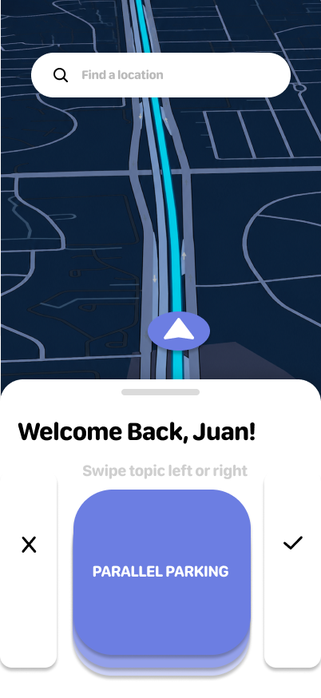
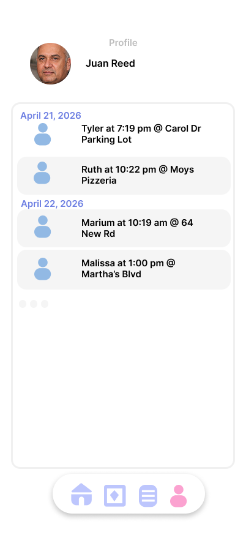
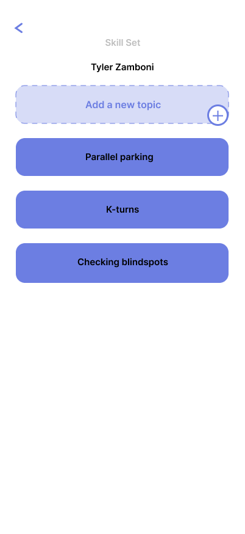
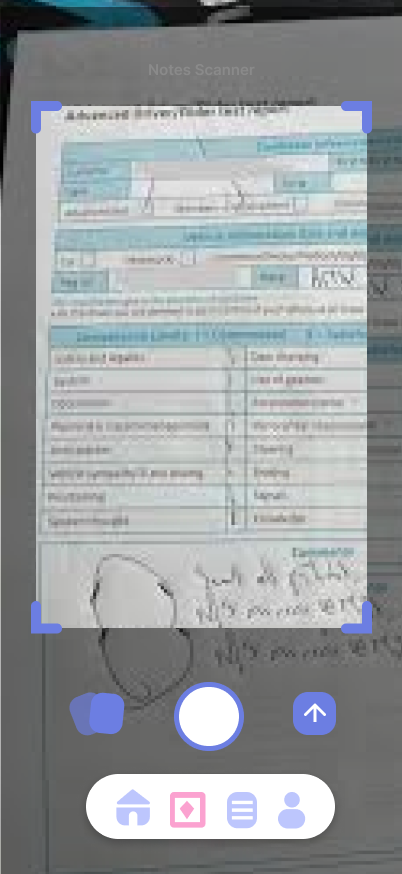

06 · Final Design
The app,
screen by screen.
A fully realized mobile app — live session logging on the road, and full student histories. One tool for the entire lesson lifecycle.

Mobile App
Live session dashboard — swipe-to-flag, voice-to-text notes, auto-generated summary reports
App Screens
A calm, high-contrast UI designed to minimize distraction — fast to read, fast to interact with, and structured to surface the right information at the right phase of the lesson.

Home
Start Session

Driver Profile

Student Flag List

Scan Written Notes
Student Reports Archive